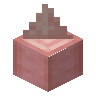

去皮尖刺樱花木实心栅栏
Stripped Spiked Cherry Palisade
英文名: Stripped Spiked Cherry Palisade命名空间 ID:
blockbox:stripped_spiked_cherry_palisade类型: 方块所属模组: The Block Box资料检索: 🔎 在 MC百科 搜索「去皮尖刺樱花木实心栅栏」所属标签
合成获得 (1)
无序合成The Block Box

原始 JSON
{
"type": "minecraft:crafting_shapeless",
"category": "misc",
"group": "bb_spiked_palisades",
"ingredients": [
{
"item": "blockbox:stripped_cherry_palisade"
}
],
"result": {
"count": 1,
"id": "blockbox:stripped_spiked_cherry_palisade"
}
}用于合成 (1)
无序合成The Block Box
原始 JSON
{
"type": "minecraft:crafting_shapeless",
"category": "misc",
"group": "bb_palisades",
"ingredients": [
{
"item": "blockbox:stripped_spiked_cherry_palisade"
}
],
"result": {
"count": 1,
"id": "blockbox:stripped_cherry_palisade"
}
}